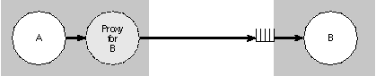
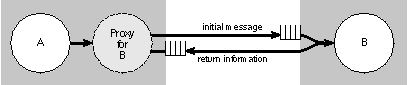

Release 3.3 Copyright ©1995 by NeXT Computer, Inc. All Rights Reserved.
| 3 |
Objective C Extensions
| The preceding chapter has all you need to know about Objective C to define classes and design programs in the language. It covers basic Objective C syntax and explains the messaging process in detail.
Class definitions are at the heart of object-oriented programming, but they're not the only mechanism for structuring object definitions in Objective C. This chapter discusses two other ways of declaring methods and associating them with a class: |
| Categories can compartmentalize a class definition or extend an existing one. | ||
| Protocols declare methods that can be implemented by any class. |
| The chapter also explains how static typing works and takes up some lesser used features of Objective C, including ways to temporarily overcome its inherent dynamism. |
| Categories |
| You can add methods to a class by declaring them in an interface file under a category name and defining them in an implementation file under the same name. The category name indicates that the methods are additions to a class declared elsewhere, not a new class.
A category can be an alternative to a subclass. Rather than define a subclass to extend an existing class, through a category you can add methods to the class directly. For example, you could add categories to Matrix and other NEXTSTEP classes. As in the case of a subclass, you don't need source code for the class you're extending. The methods the category adds become part of the class type. For example, methods added to the Matrix class in a category will be among the methods the compiler will expect a Matrix instance to have in its repertoire. Methods added to the Matrix class in a subclass would not be included in the Matrix type. (This matters only for statically typed objects, since static typing is the only way the compiler can know an object's class.) Category methods can do anything that methods defined in the class proper can do. At run time, there's no difference. The methods the category adds to the class are inherited by all the class's subclasses, just like other methods.
Adding to a Class The declaration of a category interface looks very much like a class interface declaration--except the category name is listed within parentheses after the class name and the superclass isn't mentioned. The category must import the interface file for the class it extends: |
| #import "ClassName.h"
@interface ClassName ( CategoryName ) |
| The implementation, as usual, imports its own interface. Assuming that interface and implementation files are named after the category, a category implementation looks like this: |
| #import "CategoryName.h"
@implementation ClassName ( CategoryName ) |
| Note that a category can't declare any new instance variables for the class; it includes only methods. However, all instance variables within the scope of the class are also within the scope of the category. That includes all instance variables declared by the class, even ones declared @private.
There's no limit to the number of categories that you can add to a class, but each category name must be different, and each should declare and define a different set of methods. The methods added in a category can be used to extend the functionality of the class or override methods the class inherits. A category can also override methods declared in the class interface. However, it cannot reliably override methods declared in another category of the same class. A category is not a substitute for a subclass. It's best if categories don't attempt to redefine methods the class defines elsewhere; a class shouldn't define the same method more than once. Note: When a category overrides an inherited method, the new version can, as usual, incorporate the inherited version through a message to super. But there's no way for a category method to incorporate a method with the same name defined for the same class.
How Categories are Used Categories can be used to extend classes defined by other implementors--for example, you can add methods to the classes defined in the NEXTSTEP software kits. The added methods will be inherited by subclasses and will be indistinguishable at run time from the original methods of the class. Categories can also be used to distribute the implementation of a new class into separate source files--for example, you could group the methods of a large class into several categories and put each category in a different file. When used like this, categories can benefit the development process in a number of ways: |
| They provide a simple way of grouping related methods. Similar methods defined in different classes can be kept together in the same source file. | ||
| They simplify the management of a large class when more than one developer is contributing to the class definition. | ||
| They let you achieve some of the benefits of incremental compilation for a very large class. | ||
| They can help improve locality of reference for commonly used methods. | ||
| They enable you to configure a class differently for different applications, without having to maintain different versions of the same source code. |
| Categories are also used to declare informal protocols, as discussed under "Protocols" below.
Categories of the Root Class A category can add methods to any class, including the root Object class. Methods added to Object become available to all classes that are linked to your code. While this can be useful at times, it can also be quite dangerous. Although it may seem that the modifications the category makes are well understood and of limited impact, inheritance gives them a wide scope. You may be making unintended changes to unseen classes; you may not know all the consequences of what you're doing. Moreover, others who are unaware of your changes won't understand what they're doing. In addition, there are two other considerations to keep in mind when implementing methods for the root class: |
| Messages to super are invalid (there is no superclass). | ||
| Class objects can perform instance methods defined in the root class. |
| Normally, class objects can perform only class methods. But instance methods defined in the root class are a special case. They define an interface to the run-time system that all objects inherit. Class objects are full-fledged objects and need to share the same interface.
This feature means that you need to take into account the possibility that an instance method you define in a category of the Object class might be performed not only by instances but by class objects as well. For example, within the body of the method, self might mean a class object as well as an instance. See Appendix C, "The Object Class," for more information on class access to root instance methods. |
| Protocols |
| Class and category interfaces declare methods that are associated with a particular class--mainly methods that the class implements. Informal and formal protocols, on the other hand, declare methods not associated with a class, but which any class, and perhaps many classes, might implement.
A protocol is simply a list of method declarations, unattached to a class definition. For example, these methods that report user actions on the mouse could be gathered into a protocol: |
 - mouseDown:(NXEvent *)theEvent;
- mouseDown:(NXEvent *)theEvent;
 - mouseDragged:(NXEvent *)theEvent;
- mouseDragged:(NXEvent *)theEvent;
 - mouseUp:(NXEvent *)theEvent;
- mouseUp:(NXEvent *)theEvent;
| Any class that wanted to respond to mouse events could adopt the protocol and implement its methods.
Protocols free method declarations from dependency on the class hierarchy, so they can be used in ways that classes and categories cannot. Protocols list methods that are (or may be) implemented somewhere, but the identity of the class that implements them is not of interest. What is of interest is whether or not a particular class conforms to the protocol--whether it has implementations of the methods the protocol declares. Thus objects can be grouped into types not just on the basis of similarities due to the fact that they inherit from the same class, but also on the basis of their similarity in conforming to the same protocol. Classes in unrelated branches of the inheritance hierarchy might be typed alike because they conform to the same protocol. Protocols can play a significant role in object-oriented design, especially where a project is divided among many implementors or it incorporates objects developed in other projects. NEXTSTEP software uses them heavily to support interprocess communication through Objective C messages. However, an Objective C program doesn't need to use protocols. Unlike class definitions and message expressions, they're optional. Some NEXTSTEP software kits use them; some don't. It all depends on the task at hand.
How Protocols are Used Protocols are useful in at least three different situations: |
| To declare methods that others are expected to implement | ||
| To declare the interface to an object while concealing its class | ||
| To capture similarities among classes that are not hierarchically related |
| The following sections discuss these situations and the roles protocols can play.
Methods for Others to Implement If you know the class of an object, you can look at its interface declaration (and the interface declarations of the classes it inherits from) to find what messages it responds to. These declarations advertise the messages it can receive. Protocols provide a way for it to also advertise the messages it sends. Communication works both ways; objects send messages as well as receive them. For example, an object might delegate responsibility for a certain operation to another object, or it may on occasion simply need to ask another object for information. In some cases, an object might be willing to notify other objects of its actions so that they can take whatever collateral measures might be required. If you develop the class of the sender and the class of the receiver as part of the same project (or if someone else has supplied you with the receiver and its interface file), this communication is easily coordinated. The sender simply imports the interface file of the receiver. The imported file declares the method selectors the sender uses in the messages it sends. However, if you develop an object that sends messages to objects that aren't yet defined--objects that you're leaving for others to implement--you won't have the receiver's interface file. You need another way to declare the methods you use in messages but don't implement. A protocol serves this purpose. It informs the compiler about methods the class uses and also informs other implementors of the methods they need to define to have their objects work with yours. Suppose, for example, that you develop an object that asks for the assistance of another object by sending it helpOut: and other messages. You provide an assistant instance variable to record the outlet for these messages and define a companion method to set the instance variable. This method lets other objects register themselves as potential recipients of your object's messages: |
 - setAssistant:anObject
- setAssistant:anObject
 {
{
 assistant = anObject;
assistant = anObject;
 return self;
return self;
 }
}
| Then, whenever a message is to be sent to the assistant, a check is made to be sure that the receiver implements a method that can respond: |
 - (BOOL)doWork
- (BOOL)doWork
 {
{
 . . .
. . .
 if ( [assistant respondsTo:@selector(helpOut:)] ) {
if ( [assistant respondsTo:@selector(helpOut:)] ) {
 [assistant helpOut:self];
[assistant helpOut:self];
 return YES;
return YES;
 }
}
 return NO;
return NO;
 }
}
| Since, at the time you write this code, you can't know what kind of object might register itself as the assistant, you can only declare a protocol for the helpOut: method; you can't import the interface file of the class that implements it.
Anonymous Objects A protocol can also be used to declare the methods of an anonymous object, an object of unknown class. An anonymous object may represent a service or handle a limited set of functions, especially where only one object of its kind is needed. (Objects that play a fundamental role in defining an application's architecture and objects that you must initialize before using are not good candidates for anonymity.) Objects can't be anonymous to their developers, of course, but they can be anonymous when the developer supplies them to someone else. For example, an anonymous object might be part of a software kit or be located in a remote process: |
| Someone who supplies a software kit or a suite of objects for others to use can include objects that are not identified by a class name or an interface file. Lacking the name and class interface, users have no way of creating instances of the class. Instead, the supplier must provide a ready-made instance. Typically, a method in another class returns a usable object: |
 id formatter = [receiver formattingService];
id formatter = [receiver formattingService];
| The object returned by the method is an object without a class identity, at least not one the supplier is willing to reveal. For it to be of any use at all, the supplier must be willing to identify at least some of the messages that it can respond to. This is done by associating the object with a list of methods declared in a protocol. |
| It's possible to send Objective C messages to remote objects--objects in other applications. (The next section, "Remote Messaging," discusses this possibility in more detail.) | ||
| Each application has its own structure, classes, and internal logic. But you don't need to know how another application works or what its components are to communicate with it. As an outsider, all you need to know is what messages you can send (the protocol) and where to send them (the receiver). | ||
| An application that publishes one of its objects as a potential receiver of remote messages must also publish a protocol declaring the methods the object will use to respond to those messages. It doesn't have to disclose anything else about the object. The sending application doesn't need to know the class of the object or use the class in its own design. All it needs is the protocol. |
| Protocols make anonymous objects possible. Without a protocol, there would be no way to declare an interface to an object without identifying its class.
Note: Even though the supplier of an anonymous object won't reveal its class, the object itself will reveal it at run time. A class message will return the anonymous object's class. The class object can then be queried with the name and superclass methods. However, there's usually little point in discovering this extra information; the information in the protocol is sufficient.
Nonhierarchical Similarities If more than one class implements a set of methods, those classes are often grouped under an abstract class that declares the methods they have in common. Each subclass may reimplement the methods in its own way, but the inheritance hierarchy and the common declaration in the abstract class captures the essential similarity between the subclasses. However, sometimes it's not possible to group common methods in an abstract class. Classes that are unrelated in most respects might nevertheless need to implement some similar methods. This limited similarity may not justify a hierarchical relationship. For example, many different kinds of classes might implement methods to facilitate reference counting: |
 - setRefCount:(int)count;
- setRefCount:(int)count;
 - (int)refCount;
- (int)refCount;
 - incrementCount;
- incrementCount;
 - decrementCount;
- decrementCount;
| These methods could be grouped into a protocol and the similarity between implementing classes accounted for by noting that they all conform to the same protocol.
Objects can be typed by this similarity (the protocols they conform to), rather than by their class. For example, a Matrix must communicate with the objects that represent its cells. The Matrix could require each of these objects to be a kind of Cell (a type based on class) and rely on the fact that all objects that inherit from the Cell class will have the methods needed to respond to Matrix messages. Alternatively, the Matrix could require objects representing cells to have methods that can respond to a particular set of messages (a type based on protocol). In this case, the Matrix wouldn't care what class a cell object belonged to, just that it implemented the methods.
Informal Protocols The simplest way of declaring a protocol is to group the methods in a category declaration: |
 @interface Object ( RefCounting )
@interface Object ( RefCounting )
 - setRefCount:(int)count;
- setRefCount:(int)count;
 - (int)refCount;
- (int)refCount;
 - incrementCount;
- incrementCount;
 - decrementCount;
- decrementCount;
 @end
@end
| Informal protocols are typically declared as categories of the Object class, since that broadly associates the method names with any class that inherits from Object. Since all classes inherit from the root class, the methods aren't restricted to any part of the inheritance hierarchy. (It would also be possible to declare an informal protocol as a category of another class to limit it to a certain branch of the inheritance hierarchy, but there is little reason to do so.)
When used to declare a protocol, a category interface doesn't have a corresponding implementation. Instead, classes that implement the protocol declare the methods again in their own interface files and define them along with other methods in their implementation files. An informal protocol bends the rules of category declarations to list a group of methods but not associate them with any particular class or implementation. Being informal, protocols declared in categories don't receive much language support. There's no type checking at compile time nor a check at run time to see whether an object conforms to the protocol. To get these benefits, you must use a formal protocol.
Formal Protocols The Objective C language provides a way to formally declare a list of methods as a protocol. Formal protocols are supported by the language and the run-time system. For example, the compiler can check for types based on protocols, and objects can introspect at run time to report whether or not they conform to a protocol. Formal protocols are declared with the @protocol directive: |
| @protocol ProtocolName method declarations @end |
| For example, the reference-counting protocol could be declared like this: |
 @protocol ReferenceCounting
@protocol ReferenceCounting
 - setRefCount:(int)count;
- setRefCount:(int)count;
 - (int)refCount;
- (int)refCount;
 - incrementCount;
- incrementCount;
 - decrementCount;
- decrementCount;
 @end
@end
| Unlike class names, protocol names don't have global visibility. They live in their own name space.
A class is said to adopt a formal protocol if it agrees to implement the methods the protocol declares. Class declarations list the names of adopted protocols within angle brackets after the superclass name: |
| @interface ClassName : ItsSuperclass < protocol list > |
| Categories adopt protocols in much the same way: |
| @interface ClassName ( CategoryName ) < protocol list > |
| Names in the protocol list are separated by commas.
A class or category that adopts a protocol must import the header file where the protocol is declared. The methods declared in the adopted protocol are not declared elsewhere in the class or category interface. It's possible for a class to simply adopt protocols and declare no other methods. For example, this class declaration, |
 @interface Formatter : Object < Formatting, Prettifying >
@interface Formatter : Object < Formatting, Prettifying >
 @end
@end
| adopts the Formatting and Prettifying protocols, but declares no instance variables or methods of its own.
A class or category that adopts a protocol is obligated to implement all the methods the protocol declares. The compiler will issue a warning if it does not. The Formatter class above would define all the methods declared in the two protocols it adopts, in addition to any it might have declared itself. Adopting a protocol is similar in some ways to declaring a superclass. Both assign methods to the new class. The superclass declaration assigns it inherited methods; the protocol assigns it methods declared in the protocol list.
Protocol Objects Just as classes are represented at run time by class objects and methods by selector codes, formal protocols are represented by a special data type--instances of the Protocol class. Source code that deals with a protocol (other than to use it in a type specification) must refer to the Protocol object. In many ways, protocols are similar to class definitions. They both declare methods, and at run time they're both represented by objects--classes by class objects and protocols by Protocol objects. Like class objects, Protocol objects are created automatically from the definitions and declarations found in source code and are used by the run-time system. They're not allocated and initialized in program source code. Source code can refer to a Protocol object using the @protocol() directive--the same directive that declares a protocol, except that here it has a set of trailing parentheses. The parentheses enclose the protocol name: |
 Protocol *counter = @protocol(ReferenceCounting);
Protocol *counter = @protocol(ReferenceCounting);
| This is the only way that source code can conjure up a Protocol object. Unlike a class name, a protocol name doesn't designate the object--except inside @protocol().
The compiler creates a Protocol object for each protocol declaration it encounters, but only if the protocol is also: |
| Adopted by a class, or | ||
| Referred to somewhere in source code (using @protocol()). |
| Protocols that are declared but not used (except for type checking as described below) aren't represented by Protocol objects.
Conforming to a Protocol A class is said to conform to a formal protocol if it adopts the protocol or inherits from a class that adopts it. An instance of a class is said to conform to the same set of protocols its class conforms to. Since a class must implement all the methods declared in the protocols it adopts, and those methods are inherited by its subclasses, saying that a class or an instance conforms to a protocol is tantamount to saying that it has in its repertoire all the methods that the protocol declares. It's possible to check whether an object conforms to a protocol by sending it a conformsTo: message. |
 if ( [receiver conformsTo:@protocol(ReferenceCounting)] )
if ( [receiver conformsTo:@protocol(ReferenceCounting)] )
 [receiver incrementCount];
[receiver incrementCount];
| The conformsTo: test is very much like the respondsTo: test for a single method, except that it tests whether a protocol has been adopted (and presumably all the methods it declares implemented) rather than just whether one particular method has been implemented. Because it checks for a whole list of methods, conformsTo: can be more efficient than respondsTo:.
The conformsTo: test is also very much like the isKindOf: test, except that it tests for a type based on a protocol rather than a type based on the inheritance hierarchy.
Type Checking Type declarations for objects can be extended to include formal protocols. Protocols thus offer the possibility of another level of type checking by the compiler, one that's more abstract since it's not tied to particular implementations. In a type declaration, protocol names are listed between angle brackets after the type name: |
 - (id <Formatting>)formattingService;
- (id <Formatting>)formattingService;
 id <ReferenceCounting, AutoFreeing> anObject;
id <ReferenceCounting, AutoFreeing> anObject;
| Just as static typing permits the compiler to test for a type based on the class hierarchy, this syntax permits the compiler to test for a type based on conformance to a protocol.
For example, if Formatter is an abstract class, this declaration |
 Formatter *anObject;
Formatter *anObject;
| groups all objects that inherit from Formatter into a type and permits the compiler to check assignments against that type.
Similarly, this declaration, |
 id <Formatting> anObject;
id <Formatting> anObject;
| groups all objects that conform to the Formatting protocol into a type, regardless of their positions in the class hierarchy. The compiler can check to be sure that only objects that conform to the protocol are assigned to the type.
In each case, the type groups similar objects--either because they share a common inheritance, or because they converge on a common set of methods. The two types can be combined in a single declaration: |
 Formatter <Formatting> *anObject;
Formatter <Formatting> *anObject;
| Protocols can't be used to type class objects. Only instances can be statically typed to a protocol, just as only instances can be statically typed to a class. (However, at run time, both classes and instances will respond to a conformsTo: message.)
Protocols within Protocols One protocol can incorporate others using the same syntax that classes use to adopt a protocol: |
| @protocol ProtocolName < protocol list > |
| All the protocols listed between angle brackets are considered part of the ProtocolName protocol. For example, if the Paging protocol incorporates the Formatting protocol, |
 @protocol Paging < Formatting >
@protocol Paging < Formatting >
| any object that conforms to the Paging protocol will also conform to Formatting. Type declarations |
 id <Paging> someObject;
id <Paging> someObject;
| and conformsTo: messages |
 if ( [anotherObject conformsTo:@protocol(Paging)] )
if ( [anotherObject conformsTo:@protocol(Paging)] )
 . . .
. . .
| need mention only the Paging protocol to test for conformance to Formatting as well.
When a class adopts a protocol, it must implement the methods the protocol declares, as mentioned earlier. In addition, it must conform to any protocols the adopted protocol incorporates. If an incorporated protocol incorporates still other protocols, the class must also conform to them. A class can conform to an incorporated protocol by either: |
| Implementing the methods the protocol declares, or | ||
| Inheriting from a class that adopts the protocol and implements the methods. |
| Suppose, for example, that the Pager class adopts the Paging protocol. If Pager is a subclass of Object, |
 @interface Pager : Object < Paging >
@interface Pager : Object < Paging >
| it must implement all the Paging methods, including those declared in the incorporated Formatting protocol. It adopts the Formatting protocol along with Paging.
On the other hand, if Pager is a subclass of Formatter (a class that independently adopts the Formatting protocol), |
 @interface Pager : Formatter < Paging >
@interface Pager : Formatter < Paging >
| it must implement all the methods declared in the Paging protocol proper, but not those declared in Formatting. Pager inherits conformance to the Formatting protocol from Formatter. |
| Remote Messaging |
| Like most other programming languages, Objective C was initially designed for programs that are executed as a single process in a single address space.
Nevertheless, the object-oriented model, where communication takes place between relatively self-contained units through messages that are resolved at run-time, would seem well suited for interprocess communication as well. It's not hard to imagine Objective C messages between objects that reside in different address spaces (that is, in different tasks) or in different threads of execution of the same task. For example, in a typical server-client interaction, the client task might send its requests to a designated object in the server, and the server might target specific client objects for the notifications and other information it sends. Or imagine an interactive application that needs to do a good deal of computation to carry out a user command. It could simply put up an attention panel telling the user to wait while it was busy, or it could isolate the processing work in a subordinate task, leaving the main part of the application free to accept user input. Objects in the two tasks would communicate through Objective C messages. Similarly, several separate processes could cooperate on the editing of a single document. There could be a different editing tool for each type of data in the document. One task might be in charge of presenting a unified user interface on-screen and of sorting out which user instructions were the responsibility of which editing tool. Each cooperating task could be written in Objective C, with Objective C messages being the vehicle of communication between the user interface and the tools and between one tool and another.
Distributed Objects Remote messaging in Objective C requires a run-time system that can establish connections between objects in different address spaces, recognize when a message is intended for a remote address, and transfer data from one address space to another. It must also mediate between the separate schedules of the two tasks; it has to hold messages until their remote receivers are free to respond to them. NEXTSTEP includes a distributed objects architecture that is essentially this kind of extension to the run-time system. Using distributed objects, you can send Objective C messages to objects in other tasks or have messages executed in other threads of the same task. (When remote messages are sent between two threads of the same task, the threads are treated exactly like threads in different tasks.) To send a remote message, an application must first establish a connection with the remote receiver. Establishing the connection gives the application a proxy for the remote object in its own address space. It then communicates with the remote object through the proxy. The proxy assumes the identity of the remote object; it has no identity of its own. The application is able to regard the proxy as if it were the remote object; for most purposes, it is the remote object. Remote messaging is diagrammed in Figure 13 below, where object A communicates with object B through a proxy, and messages for B wait in a queue until B is ready to respond to them: |
|  |
| Figure 13. Remote Messages
The sender and receiver are in different tasks and are scheduled independently of each other. So there's no guarantee that the receiver will be free to accept a message when the sender is ready to send it. Therefore, arriving messages are placed in a queue and retrieved at the convenience of the receiving application. A proxy doesn't act on behalf of the remote object or need access to its class. It isn't a copy of the object, but a lightweight substitute for it. In a sense, it's transparent; it simply passes the messages it receives on to the remote receiver and manages the interprocess communication. Its main function is to provide a local address for an object that wouldn't otherwise have one. A remote receiver is typically anonymous. Its class is hidden inside the remote application. The sending application doesn't need to know how that application is designed or what classes it uses. It doesn't need to use the same classes itself. All it needs to know is what messages the remote object responds to. Because of this, an object that's designated to receive remote messages typically advertises its interface in a formal protocol. Both the sending and the receiving application declare the protocol--they both import the same protocol declaration. The receiving application declares it because the remote object must conform to the protocol. The sending application declares it to inform the compiler about the messages it sends and because it may use the conformsTo: method and the @protocol() directive to test the remote receiver. The sending application doesn't have to implement any of the methods in the protocol; it declares the protocol only because it initiates messages to the remote receiver. The distributed objects architecture, including the NXProxy and NXConnection classes, is documented in the NEXTSTEP General Reference manual.
Language Support Remote messaging raises not only a number of intriguing possibilities for program design, it also raises some interesting issues for the Objective C language. Most of the issues are related to the efficiency of remote messaging and the degree of separation that the two tasks should maintain while they're communicating with each other. So that programmers can give explicit instructions about the intent of a remote message, Objective C defines five type qualifiers that can be used when declaring methods inside a formal protocol: |
| oneway in out inout bycopy |
| These modifiers are restricted to formal protocols; they can't be used inside class and category declarations. However, if a class or category adopts a protocol, its implementation of the protocol methods can use the same modifiers that are used to declare the methods.
The following sections explain how these five modifiers are used.
Synchronous and Asynchronous Messages Consider first a method with just a simple return value: |
 - (BOOL)canDance;
- (BOOL)canDance;
| When a canDance message is sent to a receiver in the same application, the method is invoked and the return value provided directly to the sender. But when the receiver is in a remote application, two underlying messages are required--one message to get the remote object to invoke the method, and the other message to send back the result of the remote calculation. This is illustrated in the figure below: |
|  |
| Figure 14. Round-Trip Message
Most remote messages will be, at bottom, two-way (or "round trip") remote procedure calls (RPCs) like this one. The sending application waits for the receiving application to invoke the method, complete its processing, and send back an indication that it has finished, along with any return information requested. Waiting for the receiver to finish, even if no information is returned, has the advantage of coordinating the two communicating applications, of keeping them both "in sync." For this reason, round-trip messages are often called synchronous. Synchronous messages are the default. However, it's not always necessary or a good idea to wait for a reply. Sometimes it's sufficient simply to dispatch the remote message and return, allowing the receiver to get to the task when it will. In the meantime, the sender can go on to other things. Objective C provides a return type modifier, oneway, to indicate that a method is used only for asynchronous messages: |
 - (oneway void)waltzAtWill;
- (oneway void)waltzAtWill;
| Although oneway is a type qualifier (like const) and can be used in combination with a specific type name, such as oneway float or oneway id, the only such combination that makes any sense is oneway void. An asynchronous message can't have a valid return value.
Pointer Arguments Next, consider methods that take pointer arguments. A pointer can be used to pass information to the receiver by reference. When invoked, the method looks at what's stored in the address it's passed. |
 - setTune:(struct tune *)aSong
- setTune:(struct tune *)aSong
 {
{
 tune = *aSong;
tune = *aSong;
 . . .
. . .
 }
}
| The same sort of argument can also be used to return information by reference. The method uses the pointer to find where it should place information requested in the message. |
 - getTune:(struct tune *)theSong
- getTune:(struct tune *)theSong
 {
{
 . . .
. . .
 *theSong = tune;
*theSong = tune;
 }
}
| The way the pointer is used makes a difference in how the remote message is carried out. In neither case can the pointer simply be passed to the remote object unchanged; it points to a memory location in the sender's address space and would not be meaningful in the address space of the remote receiver. The run-time system for remote messaging must make some adjustments behind the scenes.
If the argument is used to pass information by reference, the run-time system must dereference the pointer, ship the value it points to over to the remote application, store the value in an address local to that application, and pass that address to the remote receiver. If, on the other hand, the pointer is used to return information by reference, the value it points to doesn't have to be sent to the other application. Instead, a value from the other application must be sent back and written into the location indicated by the pointer. In the one case, information is passed on the first leg of the round trip. In the other case, information is returned on the second leg of the round trip. Because these cases result in very different actions on the part of the run-time system for remote messaging, Objective C provides type modifiers that can clarify the programmer's intention: |
| The type modifier in indicates that information is being passed in a message: |
 - setTune:(in struct tune *)aSong;
- setTune:(in struct tune *)aSong;
| The modifier out indicates that an argument is being used to return information by reference: |
 - getTune:(out struct tune *)theSong;
- getTune:(out struct tune *)theSong;
| A third modifier, inout, indicates that an argument is used both to provide information and to get information back: |
 - adjustTune:(inout struct tune *)aSong;
- adjustTune:(inout struct tune *)aSong;
| The NEXTSTEP distributed objects system takes inout to be the default modifier for all pointer arguments except those declared const, for which in is the default. inout is the safest assumption, but also the most time-consuming since it requires passing information in both directions. The only modifier that makes sense for arguments passed by value (nonpointers) is in. While in can be used with any kind of argument, out and inout make sense only for pointers.
In C, pointers are sometimes used to represent composite values. For example, a string is represented as a character pointer (char *). Although in notation and implementation there's a level of indirection here, in concept there's not. Conceptually, a string is an entity in and of itself, not a pointer to something else. In cases like this, the distributed objects system automatically dereferences the pointer and passes whatever it points to as if by value. Therefore, the out and inout modifiers make no sense with simple character pointers. It takes an additional level of indirection in a remote message to pass or return a string by reference: |
 - getTuneTitle:(out char **)theTitle;
- getTuneTitle:(out char **)theTitle;
| The same is true of objects: |
 - adjustMatrix:(inout Matrix **)theMatrix;
- adjustMatrix:(inout Matrix **)theMatrix;
| These conventions are enforced at run time, not by the compiler.
Proxies and Copies Finally, consider a method that takes an object as an argument: |
 - danceWith:aPartner;
- danceWith:aPartner;
| A danceWith: message passes an object id to the receiver. If the sender and receiver are in the same application, they would both be able to refer to the same aPartner object.
This is true even if the receiver is in a remote application, except that the receiver will need to refer to the object through a proxy (since the object isn't in its address space). The pointer that danceWith: delivers to a remote receiver is actually a pointer to the proxy. Messages sent to the proxy would be passed across the connection to the real object and any return information would be passed back to the remote application. There are times when proxies may be unnecessarily inefficient, when it's better to send a copy of the object to the remote process so that it can interact with it directly in its own address space. To give programmers a way to indicate that this is intended, Objective C provides a bycopy type modifier: |
 - danceWith:(bycopy id)aClone;
- danceWith:(bycopy id)aClone;
| bycopy can also be used for return values: |
 - (bycopy)dancer;
- (bycopy)dancer;
| It can similarly be used with out to indicate that an object returned by reference should be copied rather than delivered in the form of a proxy: |
 - getDancer:(bycopy out id *)theDancer;
- getDancer:(bycopy out id *)theDancer;
| The only type that it makes sense for bycopy to modify is an object, whether dynamically typed id or statically typed by a class name.
Note: When a copy of an object is passed to another application, it cannot be anonymous. The application that receives the object must have the class of the object loaded in its address space. |
| Static Options |
| Objective C objects are dynamic entities. As many decisions about them as possible are pushed from compile time to run time: |
| The memory for objects is dynamically allocated at run time by class methods that create new instances. | ||
| Objects are dynamically typed. In source code (at compile time), any object can be of type id no matter what its class. The exact class of an id variable (and therefore its particular methods and data structure) isn't determined until the program is running. | ||
| Messages and methods are dynamically bound, as described under "How Messaging Works" in the previous chapter. A run-time procedure matches the method selector in the message to a method implementation that "belongs to" the receiver. |
| These features give object-oriented programs a great deal of flexibility and power, but there's a price to pay. Messages are somewhat slower than function calls, for example, (though not much slower due to the efficiency of the run-time system) and the compiler can't check the exact types (classes) of id variables.
To permit better compile-time type checking, and to make code more self-documenting, Objective C allows objects to be statically typed with a class name rather than generically typed as id. It also lets you turn some of its object-oriented features off in order to shift operations from run time back to compile time.
Static Typing If a pointer to a class name is used in place of id in an object declaration, |
 Matrix *thisObject;
Matrix *thisObject;
| the compiler restricts the declared variable to be either an instance of the class named in the declaration or an instance of a class that inherits from the named class. In the example above, thisObject can only be a Matrix of some kind.
Statically typed objects have the same internal data structures as objects declared to be ids. The type doesn't affect the object; it affects only the amount of information given to the compiler about the object and the amount of information available to those reading the source code. Static typing also doesn't affect how the object is treated at run time. Statically typed objects are dynamically allocated by the same class methods that create instances of type id. If Mosaic is a subclass of Matrix, the following code would still produce an object with all the instance variables of a Mosaic, not just those of a Matrix: |
 Matrix *thisObject = [[Mosaic alloc] init];
Matrix *thisObject = [[Mosaic alloc] init];
| Messages sent to statically typed objects are dynamically bound, just as objects typed id are. The exact type of a statically typed receiver is still determined at run time as part of the messaging process. A display message sent to thisObject |
 [thisObject display];
[thisObject display];
| will perform the version of the method defined in the Mosaic class, not its Matrix superclass.
By giving the compiler more information about an object, static typing opens up possibilities that are absent for objects typed id: |
| In certain situations, it allows for compile-time type checking. | ||
| It can free objects from the restriction that identically named methods must have identical return and argument types. | ||
| It permits you to use the structure pointer operator to directly access an object's instance variables. |
| The first two topics are discussed in the sections below. The third was covered in the previous chapter under "Defining a Class."
Type Checking With the additional information provided by static typing, the compiler can deliver better type-checking services in two situations: |
| When a message is sent to a statically typed receiver, the compiler can check to be sure that the receiver can respond. A warning is issued if the receiver doesn't have access to the method named in the message. | ||
| When a statically typed object is assigned to a statically typed variable, the compiler can check to be sure that the types are compatible. A warning is issued if they're not. |
| An assignment can be made without warning provided the class of the object being assigned is identical to, or inherits from, the class of the variable receiving the assignment. This is illustrated in the example below. |
 View *aView;
View *aView;
 Matrix *aMatrix;
Matrix *aMatrix;
 aMatrix = [[Matrix alloc] init];
aMatrix = [[Matrix alloc] init];
 aView = aMatrix;
aView = aMatrix;
| Here aMatrix can be assigned to aView because a Matrix is a kind of View--the Matrix class inherits from View. However, if the roles of the two variables are reversed and aView is assigned to aMatrix, the compiler will generate a warning; not every View is a Matrix. (For reference, Figure 7 in the previous chapter shows a portion of the class hierarchy including View and Matrix.)
There's no check when the expression on either side of the assignment operator is an id. A statically typed object can be freely assigned to an id, or an id to a statically typed object. Because methods like alloc and init return ids, the compiler doesn't check to be sure that a compatible object is returned to a statically typed variable. The following code is error-prone, but is allowed nonetheless: |
 Matrix *aMatrix;
Matrix *aMatrix;
 aMatrix = [[Window alloc] init];
aMatrix = [[Window alloc] init];
| Note: This is consistent with the implementation of void * (pointer to void) in ANSI C. Just as void * is a generic pointer that eliminates the need for coercion in assignments between pointers, id is a generic pointer to objects that eliminates the need for coercion to a particular class in assignments between objects.
Return and Argument Types In general, methods that share the same selector (the same name) must also share the same return and argument types. This constraint is imposed by dynamic binding. Because the class of a message receiver, and therefore class-specific details about the method it's asked to perform, can't be known at compile time, the compiler must treat all methods with the same name alike. When it prepares information on method return and argument types for the run-time system, it creates just one method description for each method selector. However, when a message is sent to a statically typed object, the class of the receiver is known by the compiler. The compiler has access to class-specific information about the methods. Therefore, the message is freed from the restrictions on its return and argument types.
Static Typing to an Inherited Class An instance can be statically typed to its own class or to any class that it inherits from. All instances, for example, can be statically typed as Objects. However, the compiler understands the class of a statically typed object only from the class name in the type designation, and it does its type checking accordingly. Typing an instance to an inherited class can therefore result in discrepancies between what the compiler thinks would happen at run time and what will actually happen. For example, if you statically type a Matrix instance as a View, |
 View *myMatrix = [[Matrix alloc] init];
View *myMatrix = [[Matrix alloc] init];
| the compiler will treat it as a View. If you send the object a message to perform a Matrix method, |
 id cell = [myMatrix selectedCell];
id cell = [myMatrix selectedCell];
| the compiler will complain. The selectedCell method is defined in the Matrix class, not in View.
However, if you send it a message to perform a method that the View class knows about, |
 [myMatrix display];
[myMatrix display];
| the compiler won't complain, even though Matrix overrides the method. At run time, Matrix's version of the method will be performed.
Similarly, suppose that the Upper class declares a worry method that returns a double, |
 - (double)worry;
- (double)worry;
| and the Middle subclass of Upper overrides the method and declares a new return type: |
 - (int)worry;
- (int)worry;
| If an instance is statically typed to the Upper class, the compiler will think that its worry method returns a double, and if an instance is typed to the Middle class, it will think that worry returns an int. Errors will obviously result if a Middle instance is typed to the Upper class. The compiler will inform the run-time system that a worry message sent to the object will return a double, but at run time it will actually return an int and generate an error.
Static typing can free identically named methods from the restriction that they must have identical return and argument types, but it can do so reliably only if the methods are declared in different branches of the class hierarchy.
Getting a Method Address The only way to circumvent dynamic binding is to get the address of a method and call it directly as if it were a function. This might be appropriate on the rare occasions when a particular method will be performed many times in succession and you want to avoid the overhead of messaging each time the method is performed. With a method defined in the Object class, methodFor:, you can ask for a pointer to the procedure that implements a method, then use the pointer to call the procedure. The pointer that methodFor: returns must be carefully cast to the proper function type. Both return and argument types should be included in the cast. The example below shows how the procedure that implements the setTag: method might be called: |
 id (*setter)(id, SEL, int);
id (*setter)(id, SEL, int);
 int i;
int i;
 setter = (id (*)(id, SEL, int))[target methodFor:@selector(setTag:)];
setter = (id (*)(id, SEL, int))[target methodFor:@selector(setTag:)];
 for ( i = 0; i < 1000, i++ )
for ( i = 0; i < 1000, i++ )
 setter(targetList[i], @selector(setTag:), i);
setter(targetList[i], @selector(setTag:), i);
| The first two arguments passed to the procedure are the receiving object (self) and the method selector (_cmd). These arguments are hidden in method syntax but must be made explicit when the method is called as a function.
Using methodFor: to circumvent dynamic binding saves most of the time required by messaging. However, the savings will be significant only where a particular message will be repeated many times, as in the for loop shown above. Note that methodFor: is provided by the run-time system; it's not a feature of the Objective C language itself.
Getting an Object Data Structure A fundamental tenet of object-oriented programming is that the data structure of an object is private to the object. Information stored there can be accessed only through messages sent to the object. However, there's a way to strip an object data structure of its "objectness" and treat it like any other C structure. This makes all the object's instance variables publicly available. When given a class name as an argument, the @defs() directive produces the declaration list for an instance of the class. This list is useful only in declaring structures, so @defs() can appear only in the body of a structure declaration. This code, for example, declares a structure that would be identical to the template for an instance of the Worker class: |
 struct workerDef {
struct workerDef {
 @defs(Worker)
@defs(Worker)
 } *public;
} *public;
| Here public is declared as a pointer to a structure that's essentially indistinguishable from a Worker instance. With a little help from a type cast, a Worker id can be assigned to the pointer. The object's instance variables can then be accessed publicly through the pointer: |
 id aWorker;
id aWorker;
 aWorker = [[Worker alloc] init];
aWorker = [[Worker alloc] init];
 public = (struct workerDef *)aWorker;
public = (struct workerDef *)aWorker;
 public->boss = nil;
public->boss = nil;
| This technique of turning an object into a structure makes all of its instance variables public, no matter whether they were declared @private, @protected, or @public.
Objects generally aren't designed with the expectation that they'll be turned into C structures. You may want to use @defs() for classes you define entirely yourself, but it should not be applied to classes found in a library or to classes you define that inherit from library classes. |
| Type Encoding |
| To assist the run-time system, the compiler encodes the return and argument types for each method in a character string and associates the string with the method selector. The coding scheme it uses might also be of use in other contexts and so is made publicly available with the @encode() directive. When given a type specification, @encode() returns a string encoding that type. The type can be a basic type such as an int, a pointer, a tagged structure or union, or a class name--anything, in fact, that can be used as an argument to the C sizeof() operator. |
 char *buf1 = @encode(int **);
char *buf1 = @encode(int **);
 char *buf2 = @encode(struct key);
char *buf2 = @encode(struct key);
 char *buf3 = @encode(Matrix);
char *buf3 = @encode(Matrix);
| The table below lists the type codes. Note that many of them overlap with the codes used in writing to a typed stream. However, there are codes listed here that you can't use when writing to a typed stream and there are codes that you may want to use when writing to a typed stream that aren't generated by @encode(). (See the NEXTSTEP General Reference manual and the next chapter of this book for information on typed streams.) |
| Code | Meaning | |
| c | A char | |
| i | An int | |
| s | A short | |
| l | A long | |
| C | An unsigned char | |
| I | An unsigned int | |
| S | An unsigned short | |
| L | An unsigned long | |
| f | A float | |
| d | A double | |
| v | A void | |
| * | A character string (char *) | |
| @ | An object (whether statically typed or typed id) | |
| # | A class object (Class) | |
| : | A method selector (SEL) | |
| [...] | An array | |
| {...} | A structure | |
| (...) | A union | |
| bnum | A bitfield of num bits | |
| ^type | A pointer to type | |
| ? | An unknown type |
| The type specification for an array is enclosed within square brackets; the number of elements in the array is specified immediately after the open bracket, before the array type. For example, an array of 12 pointers to floats would be encoded as: |
 [12^f]
[12^f]
| Structures are specified within braces, and unions within parentheses. The structure tag is listed first, followed by an equal sign and the codes for the fields of the structure listed in sequence. For example, this structure, |
 typedef struct example {
typedef struct example {
 id anObject;
id anObject;
 char *aString;
char *aString;
 int anInt;
int anInt;
 } Example;
} Example;
| would be encoded like this: |
 {example=@*i}
{example=@*i}
| The same encoding results whether the defined type name (Example) or the structure tag (example) is passed to @encode(). The encoding for a structure pointer carries the same amount of information about the structure's fields: |
 ^{example=@*i}
^{example=@*i}
| However, another level of indirection removes the internal type specification: |
 ^^{example}
^^{example}
| Objects are treated like structures. For example, passing the Object class name to @encode() yields this encoding: |
 {Object=#}
{Object=#}
| The Object class declares just one instance variable, isa, of type Class.
Note: Although the @encode() directive doesn't return them, the run-time system also uses these additional encodings for type qualifiers when they're used to declare methods in a protocol: |
| Code | Meaning | |
| r | const | |
| n | in | |
| N | inout | |
| o | out | |
| O | bycopy | |
| V | oneway |